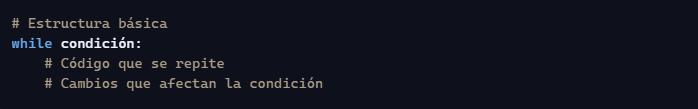
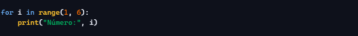

Explora los Temas Clave
Nociones Basicas
Nociones basicas e informacion principal de python.
Variables y tipo de datos basicos
Explicacion de como funcionan las variables en python y que tipo de datos existen
Condicionales
Como funcionan las condicionales, declaraciones y ejemplos.
Bucles y Tipos
Funcion de bucles y sus diferentes tipos.
Funciones y Parametros
Que son funciones, funcionamiento, estructura y parametros.
Nociones Basicas
En la programacion python nos da una serie de ventajas que otros lenguajes de programacion, gracias a su sintaxis mas actualizada y mas dinamica nos ayuda a tener una curva de aprendizaje mucho mas alta que otros lenguajes comunes como php, c, c++, java, entre otros
Puntos Claves:
- Curva de Aprendizaje: Python suele ser mas sencillo para empezar a programar, ya que su sintaxis suele ser mas legible y simple, olvida completamente los simbolos que encierran un bloque de codigo tal como las llaves {} como el punto y coma ;. Por otro lado, para encerrar bloques de codigo en funciones se maneja la identacion (tabulacion).
- Versatilidad : Hoy en dia python nos da la posibilidad del manejo de diversos campos tales como Automatizacion de tareas, creacion de paginas web, analisis de datos, programacion en juegos e IA.
- Simplificacion de codigo: Tomando en cuenta lo anterior mencionado, existen tareas que en otros lenguajes de programacion toma 10 lineas de codigo en python simplemente se puede realizar en 3
Variables y Tipo de datos
Tipo de datos
Los tipos de datos definen qué tipo de valor puede tener una variable. Python tiene varios tipos de datos integrados que te permiten trabajar con números, texto, listas, y más.
- int: Enteros (sin decimales). Ejemplo: 5, -3, 1000
- float: Decimales. Ejemplo: 3.14, -0.5, 2.0
- complex:complex: Números complejos. Ejemplo: 2 + 3j
Tipo numero
- str (string): Cadenas de texto. Ejemplo: "Hola", 'Python'
Tipo texto
- bool: Verdadero o falso. Solo dos valores posibles: True o False
Tipo Booleanos
- list: Lista de elementos. Ejemplo: [1, 2, 3], ["a", "b", "c"].
- tuple: Tupla (como lista, pero no se puede modificar). Ejemplo: (1, 2, 3)
- range: Rango de números. Ejemplo: range(5) genera 0, 1, 2, 3, 4
Tipo Secuencia
- dict: Diccionario (clave: valor). Ejemplo: {"nombre": "Ana", "edad": 25}
Tipo coleccion
Es fundamental saber que en python usa variables dinamicas, es decir, no es necesario declarar que tipo de dato es la variable (string, int, ). Solo escribes nombre y valor
Variables
Una variable es fundamentalmente un nombre que le das a un lugar en la memoria de la computadora para almacenar un valor. Piensa en ella como una etiqueta o una caja con un nombre, donde puedes guardar diferentes tipos de información.

Es fundamental saber que en python usa variables dinamicas, es decir, no es necesario declarar que tipo de dato es la variable (string, int, ). Solo escribes nombre y valor
Condicionales
Los condicionales permiten que tu programa tome decisiones. Usan expresiones lógicas para ejecutar diferentes bloques de código según si algo es verdadero (True) o falso (False).
Estructura Basica:
Ilustracion, para indicar a python donde empieza la condicional es mediante los dos puntos(:) .
Operaciones comunes en condicionales
Existen varios tipos de operadores, estos se utilizan junto a las condicionales para realizar comparaciones y decidir si se cumple o no la condicion.
| Símbolo | Significa | Ejemplo |
|---|---|---|
| == | Es igual | x == 5 |
| != | No es igual | x != 3 |
| > | Mayor que | x > 10 |
| < | Menor que | x < 20 |
| >= | Mayor o igual que | x >= 7 |
| <= | Menor o igual que | x <= 2 |
| Operador | Significa | Ejemplo |
|---|---|---|
| and | Ambas condiciones deben ser verdaderas | (edad >= 18 and pais == "Venezuela") |
| or | Al menos una condición debe ser verdadera | (color == "rojo" or color == "azul") |
| not | Niega la condición (la convierte en lo contrario) | not activo |
Otro tipo de operador logico.
Si la edad es 20, se imprime “Eres mayor de edad”.
El programa revisa si el número es mayor, menor o igual a cero.
Si la variable es True, se permite la entrada.
El programa responde según el día que pongas.
Aquí se usan dos condiciones juntas con and.
Bucles
Un bucle permite repetir una acción varias veces sin escribir el mismo código una y otra vez. Es como decir: “Haz esto 5 veces” o “Haz esto mientras algo sea verdadero”.
Tipos de Bucles:
- while: El bucle while repite algo mientras una condición sea verdadera. 
- for: El bucle for se usa para repetir algo un número conocido de veces, especialmente con listas o rangos.
Estructura basica.
Esto imprime los números del 1 al 5.
Estructura basica.
Esto imprime los números del 1 al 5.
Funciones
Una función es un bloque de código que hace una tarea específica. Sirve para reutilizar código sin tener que escribirlo muchas veces. Es como una receta: tú la defines una vez, y luego la usas cuando quieras.
Estructura basica de una Funcion
- def → palabra clave para definir la función.
- nombre_de_la_funcion → el nombre que tú le das
- () → pueden llevar datos llamados parámetros
- : → indica que empieza el bloque de código
Funciones con Parametros y Ejemplos:
Una función con parámetros es como una receta que necesita ingredientes para funcionar. Los parámetros son esos ingredientes: datos que tú le das a la función para que los use.